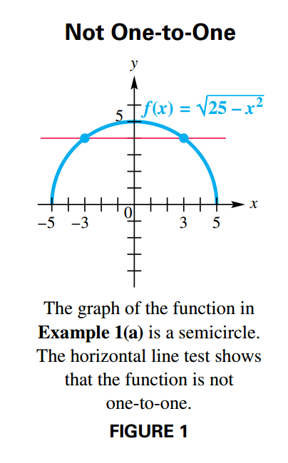
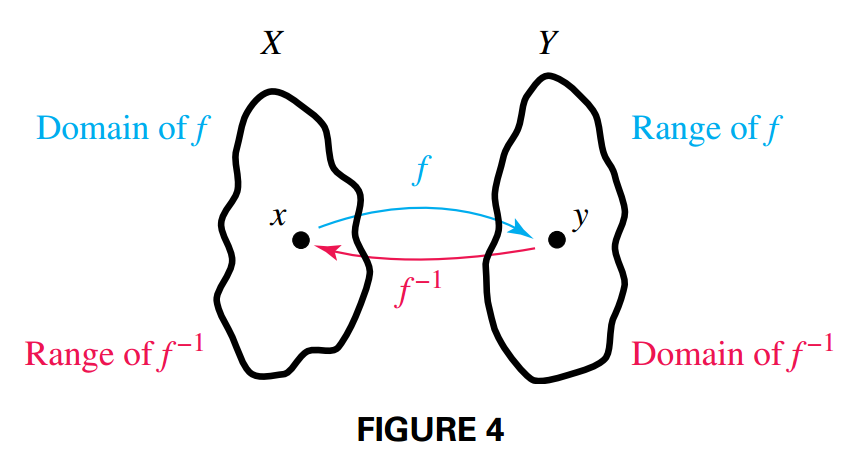
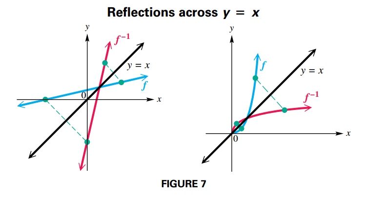
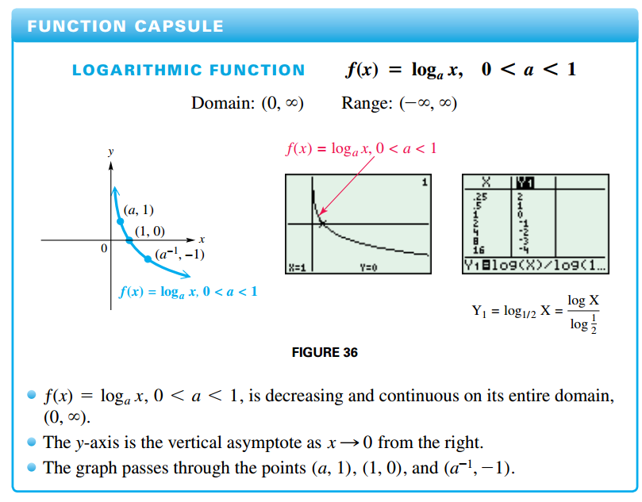
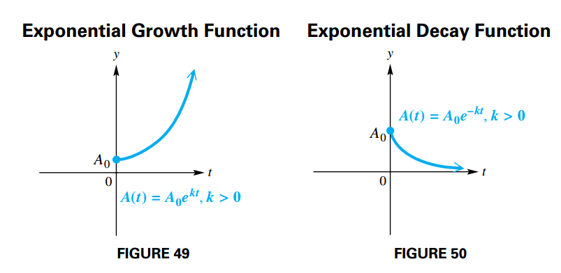

Inverse, Exponential and Logarithmic Functions
Inverse Functions
One-to-One Functions
A function $f$ is a one-to-one function if, for elements $a$ and $b$ from the domain of $f$:
$$ \begin{aligned} a \neq b \end{aligned} $$implies
$$ \begin{aligned} f(a) \neq f(b) \end{aligned} $$And by the contrapositive:
$$ \begin{aligned} f(a) = f(b) \end{aligned} $$implies
$$ \begin{aligned} a = b \end{aligned} $$A function that is either always increasing or always decreasing on its domain must be one-to-one.
Horizontal Line Test
A function is one-to-one if every horizontal line intersects the graph of the function at most once.


Inverse Function
Let $f$ be a one-to-one function. Then $g$ is the inverse function of $f$ and $f$ is the inverse function of $g$ if:
$$ \begin{aligned} (f \circ g)(x) = x \text{ for every } x \text{ in the domain of } g \end{aligned} $$and
$$ \begin{aligned} (g \circ x)(x) = x \text{ for every } x \text{ in the domain of } f \end{aligned} $$A special notation is often used for inverse functions. If $g$ is the inverse function of $ƒ$, then $g$ can be written as $f^{-1}$ (read “f-inverse”).
By the definition of an inverse function, the domain of $f$ equals the range of $f^{-1}$, and the range of $f$ equals the domain of $f^{-1}$.

Finding the Equation of the Inverse of y = ƒ(x)
For a one-to-one function $f$ defined by an equation $y = f(x)$, find the defining equation of the inverse as follows. (You may need to replace $f(x)$ with $y$ first. Any restrictions on $x$ and $y$ should be considered.)
- Interchange $x$ and $y$.
- Solve for $y$.
- Replace $y$ with $f^{-1}$.
Geometric Relationship between the graphs of $f$ and $f^{-1}$
If a function $f$ is one-to-one, then the graph of its inverse $f^{-1}$ is a reflection of the graph of $f$ across the line $y = x$.

Important Facts about Inverses
- If $f$ is one-to-one, then $f^{-1}$ exists
- The domain of $f$ is equal to the range of $f^{-1}$, and the range of $f$ is equal to the domain of $f^{-1}$.
- If the point $(a, b)$ lies on the graph of $f$, then $(b, a)$ lies on the graph of $f^{-1}$. The graphs of $f$ and $f^{-1}$ are reflections of each other across the line $y = x$.
Exponential Functions
Real-Number Exponents
For any real number $a > 0$, $a \neq 1$, the following statements are true:
- $a^{x}$ is a unique real number for each real number $x$.
- $a^b = a^c$ if and only if $b = c$.
- If $a > 1$ and $m < n$, then $a^m > a^n$.
Graphs of Exponential Functions
If $a > 0$ and $a \neq 1$, then:
$$ \begin{aligned} f(x) = a^x \end{aligned} $$is the exponential function with base $a$.
The behavior of the graph of an exponential function depends, in general, on the magnitude of $a$. As a becomes larger ($a > 1$), the graph becomes steeper moving to the right of the $y$-axis. (See FIGURE 16(a)).
If the base $a$ is between $0$ and $1$, as a gets closer to $0$, the graph becomes steeper moving to the left of the $y$-axis. (See FIGURE 16(b)).

Exponential Equations (Type 1)
On the equation $25^x = 125$ the variable appears in the exponent, we refer to such an equation as a Type 1 exponential equation (this is not any type of standard naming, it is just used on this manual).
Logarithms and Their Properties
Logarithm
For all positive numbers $a$, where $a \neq 1$,
$$ \begin{aligned} a^y = x \end{aligned} $$is equivalent to
$$ \begin{aligned} y = \log_a x \end{aligned} $$The expression $\log_a x$ represents the exponent to which the base $a$ must be raised in order to obtain $x$.
The number $a$ is called the base of the logarithm, and $x$ is called the argument of the expression.
The argument of a logarithm must be a positive number.
Common Logarithm
Base $10$ logarithms are called common logarithms. The common logarithm of $x$ is written $log x$, where the base is understood to be $10$.
Natural Logarithm
Logarithms with base $e$ are called natural logarithms. The natural logarithm of a positive number $x$ is written $\ln x$.
Properties of Logarithms
For $a > 0$, $a \neq q$, and any real number $k$, the following hold.
- $log_a 1 = 0$
- $log_a a^k = k$
- $a^{\log_a k} = k ,k > 0$
- Product rule $\log_a xy = \log_a x + \log_a y$
- Quotient rule $\log_a \frac{x}{y} = \log_a x - \log_a y$
- Power rule $\log_a x^r = r\log_a x$
Proofs
Property $1$ is true because $a^0 = 1$ for any nonzero value of $a$.
Property $2$ is verified by writing the equation in exponential form. By the definition of the logarithm, if $\log_a a^k = k$, then $a^k = a^k$, which is true.
Property $3$ is justified by the fact that $\log_a k$ is the value we have to raise $a$ to obtain $k$. If we raise $a$ by $\log_a k$, then by the definition of the logarithm we obtain $k$.
The proof of Property $4$, the product rule, is as follows:
Let $m = \log_a x$ and $n = \log_a y$, then
$a^m = x$ and $a^n = y$ by the definiton of a logarithm. If we multiply them:
$$ \begin{aligned} a^m a^n = xy \end{aligned} $$$$ \begin{aligned} a^{m + n} = xy \end{aligned} $$By the definition of the logarithm:
$$ \begin{aligned} \log_a xy = m + n \end{aligned} $$Substituting $m = \log_a x$ and $n = \log_a y$
$$ \begin{aligned} \log_a xy = \log_a x + \log_a y \end{aligned} $$Properties $5$ and $6$, the quotient and power rules, are proved in a similar way
Change-of-Base Rule
For any positive real numbers $x$, $a$, and $b$, where $a \neq 1$ and $b \neq 1$
$$ \begin{aligned} \log_a x = \frac{\log_b x}{\log_b a} \end{aligned} $$Let
$$ \begin{aligned} y = \log_a x \end{aligned} $$By the definition of the logarithm:
$$ \begin{aligned} a^y = x \end{aligned} $$We apply the logarithm on both sides:
$$ \begin{aligned} \log_b a^y = \log_b x \end{aligned} $$By the power rule:
$$ \begin{aligned} y \log_b a = \log_b x \end{aligned} $$$$ \begin{aligned} y = \frac{\log_b x}{\log_b a} \end{aligned} $$Substituting $y = \log_a x$
$$ \begin{aligned} \log_a x = \frac{\log_b x}{\log_b a} \end{aligned} $$Logarithms Functions
Logarithmic Function
If $a > 0$, $a \neq 1$, and $x > 0$, then
$$ \begin{aligned} f(x) = \log_a x \end{aligned} $$is the logarithmic function with base $a$.
The exponential function $f(x) = a^x$, $a > 1$, is increasing on its domain. If $0< a <1$, the function is decreasing on its domain. Thus, for all allowable bases $a$, function $f$ is one-to-one and has an inverse. We can find the rule for $f^{-1}$ analytically:
$$ \begin{aligned} f(x) = a^x \end{aligned} $$$$ \begin{aligned} y = a^x \end{aligned} $$$$ \begin{aligned} x = a^y \end{aligned} $$By the definition of the logarithm:
$$ \begin{aligned} y = \log_a x \end{aligned} $$$$ \begin{aligned} f^{-1}(x) = \log_a x \end{aligned} $$To confirm this, use properties of logarithms to show that $(f \circ f^{-1})(x) = x$ and $(f^{-1} \circ f)(x) = x$.
$$ \begin{aligned} (f \circ f^{-1})(x) = f(f^{-1}(x)) = a^{\log_a x} = x \end{aligned} $$$$ \begin{aligned} (f^{-1} \circ f)(x) = f^{-1}(f(x)) = \log_a a^x = x \end{aligned} $$Thus, the functions $f(x) = a^x$ and $g(x) = log_a x$ are inverse functions.
Graphs of Logarithmic Functions


Exponential and Logarithmic Equations and Inequalities
Properties of Logarithmic and Exponential Functions
For $b > 0$ and $b \neq 1$:
- $b^x = b^y$ if and only if $x = y$.
- If $x > 0$ and $y > 0$, then $log_b x = log_b y$ if and only if $x = y$
Exponential Equations and Inequalities (Type 2)
Unlike a Type 1 exponential equation (or inequality) a Type 2 exponential equation (or inequality) is one in which the exponential expressions cannot easily be written as powers of the same base. For example:
$$ \begin{aligned} 7^x = 12 \end{aligned} $$

Solving Exponential and Logarithmic Equations
An exponential or logarithmic equation can be solved by changing the equation into one of the following forms, where $a$ and $b$ are real numbers, $a > 0$, and $a \neq 1$.
- $a^{f(x)} = b$: Solve by taking a logarithm of each side.
- $\log_a f(x) = \log_a g(x)$: The equation is satisfied when $f(x) = g(x)$
- $\log_a f(x) = b$: Solve by changing to exponential form $f(x) = a^b$
Further Applications and Modeling with Exponential and Logarithmic Functions
Physical Science Applications
A function of the form:
$$ \begin{aligned} A(t) = A_0 e^{kt} \end{aligned} $$where $A_0$ represent the initial quantity present, $t$ represents the time elapsed, $k > 0$ represents the growth constant is called an exponential growth function.
A function of the form:
$$ \begin{aligned} A(t) = A_0 e^{-kt} \end{aligned} $$is an exponential decay function.

If a quantity decays exponentially, the amount of time that it takes to reach onehalf its original amount is called the half-life.